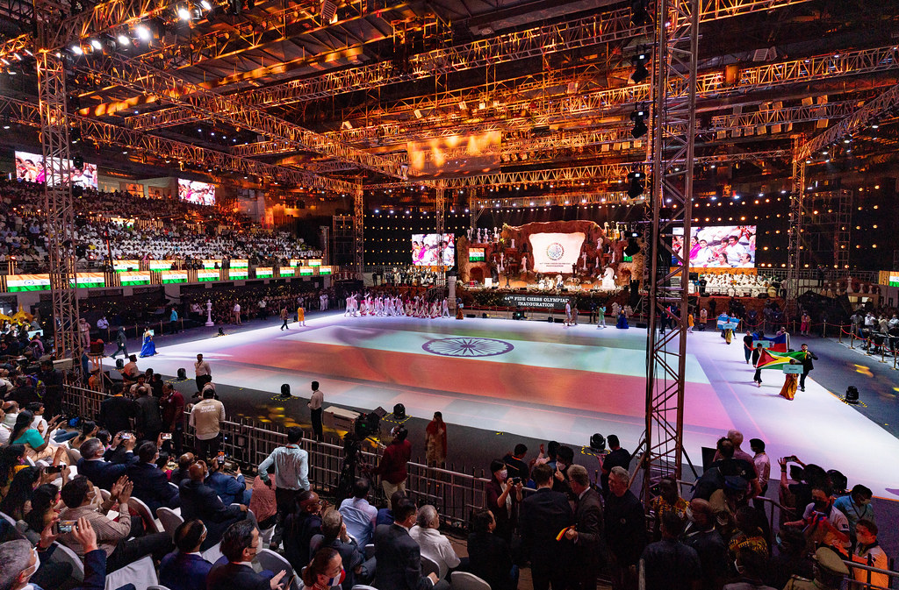
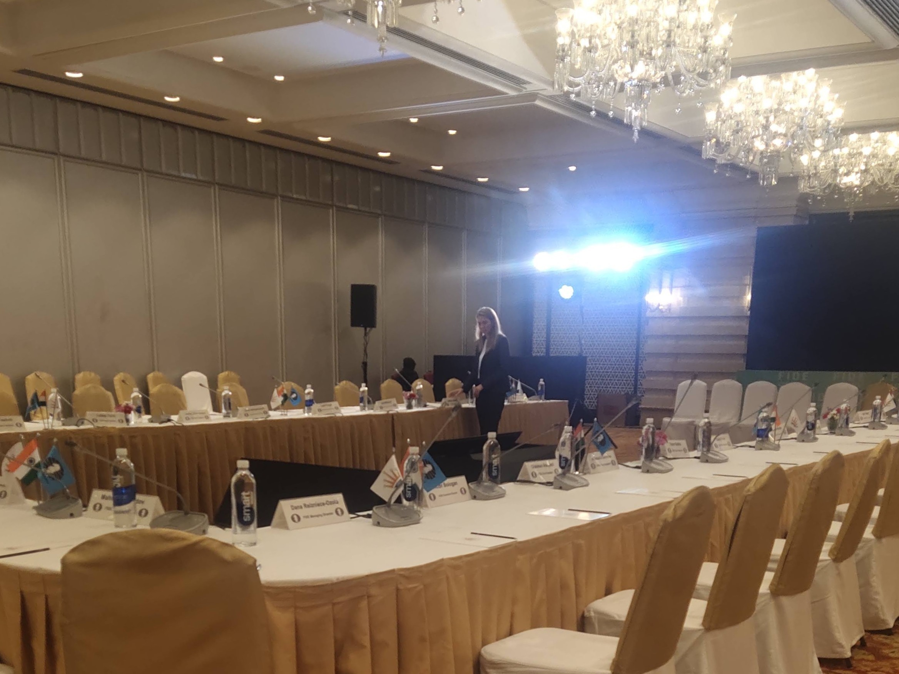
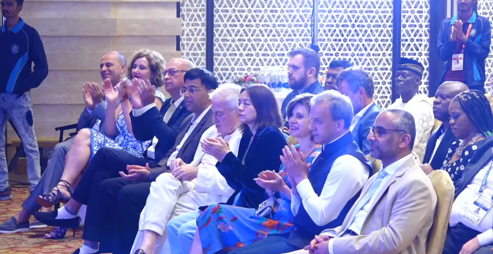
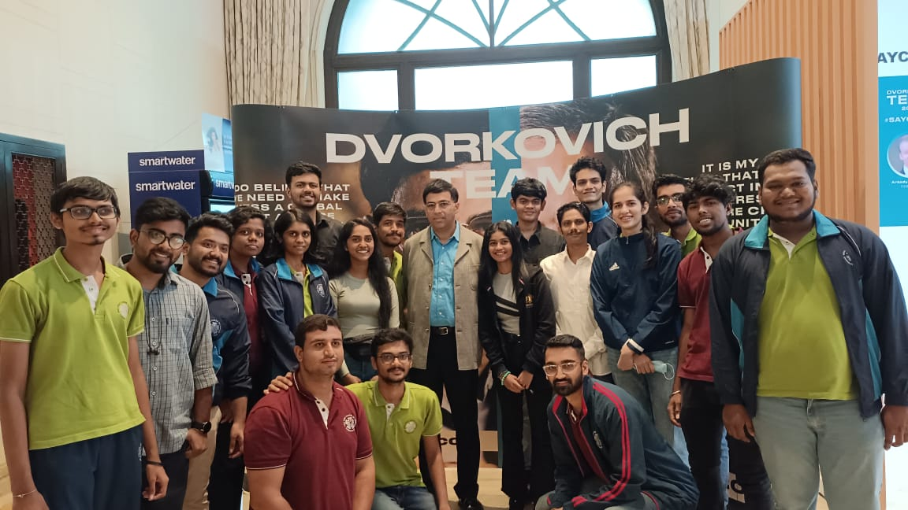

Out of everything I've done so far, this is still one of the most unique experiences — mainly because of the kind of responsibility and exposure it gave.
In July–August 2022, I got the opportunity to be part of the 44th Chess Olympiad held in Chennai. The selection process started with the All India Chess Federation volunteer screening — not a simple registration, but a proper process followed by interviews.
Around 400 volunteers were selected from across India. From there, a much smaller group was chosen for specific teams. What I didn't know going in was where exactly I'd land — and what that would mean.

400 volunteers. 25 spots. One of the youngest one.
Out of 400 selected volunteers, only about 25 were chosen for the Congress team. I was one of them — and also one of the youngest in the group. Most of the others were seniors with considerably more experience.
Initially, I wasn't sure what to expect or how things would go — being the youngest in a team of seniors isn't a comfortable position by default. But once the work started, that distinction didn't really matter. Everyone was focused on getting things done.
What the Congress team actually did
The Congress team worked closely with FIDE officials. For context, the FIDE Congress is where the key discussions and decisions of the organization happen — not the matches, but the governance. Three main bodies made up the Congress.
Where working groups on specific topics — technical, competitive, development — meet, discuss, and make recommendations.
Where FIDE's central leadership body reviews decisions, policy matters, and organizational direction.
The highest decision-making body in FIDE — where delegates from member federations vote on the most significant matters, including elections.
Our role as coordinators was to support all of these — organizing meeting spaces, coordinating schedules, assisting delegates, ensuring everything ran smoothly. It may sound straightforward, but given the scale and international significance of the event, even small details mattered considerably.

Working around some of the most well-known names in chess
One of the biggest highlights was getting to work around and observe some of the most recognized figures in the global chess world. Being in the same environment — even just as a coordinator — gave a completely different perspective.
Along with several other international delegates from member federations across the world. The diversity of the people in the room — in background, perspective, and role — was unlike anything I'd been part of before.
The most significant moment of the Congress
The FIDE elections are where key leadership roles are decided for the organization — and being present during that process, even from a coordination standpoint, was something I hadn't anticipated would feel as significant as it did.
Being present during the process of deciding global chess leadership — even from a coordination role — was not something I had expected to experience this early.

Not just about chess — about how large organizations work
What I took away from this experience was not primarily about chess. It was about something more broadly useful — how large international organizations actually function when the stakes are real.
- Coordination across countries
- Structured decision-making
- Managing many stakeholders
Clear agendas. Defined roles. Formal decision processes. Everything organized and purposeful — nothing happened by accident at this level.
Working in the Congress team also meant being in those meetings in some capacity. Even as observers and coordinators, you absorb a lot about how conversations at this level are structured and handled. That's not something you can get from reading about it.
Clarity becomes essential when people come from everywhere
One thing that became very visible across the two months: communication and coordination in international settings is harder than it looks. With people coming from different countries, backgrounds, and roles, even small miscommunication can affect the flow of an event of this scale.
Clarity isn't a soft skill. In a room with delegates from a hundred countries, it's infrastructure.
Being the youngest in the room — what that actually meant
Being the youngest in a team of seniors meant adapting quickly. There was no time to ease in gradually — the event had its own pace, and keeping up required observing more carefully, learning faster, and being willing to take on responsibility without being fully certain.

It didn't feel like just a volunteer experience by the end
The entire event lasted around two months. By the end of it, it didn't feel like just a volunteer experience. It felt like being part of something larger — something with global importance, where your small contributions to the smooth running of things actually mattered.
The Chess Olympiad itself was a huge event. But being part of the Congress team gave a completely different view of it — not the matches, but how the decisions behind them were made, how the organization governing the sport operates, and how international events of this scale actually hold together.
It wasn't just about chess.
It was about understanding how things work behind the scenes.
This experience still stands out for me because of the exposure it gave at an early stage — the kind of exposure that changes how you look at institutions, organizations, and the invisible work that keeps large events running.
Behind every major event is a layer of structure, coordination, and deliberate process that most people never see.
Being part of that layer — even in a supporting role — teaches you more about how the world works than most formal education does.